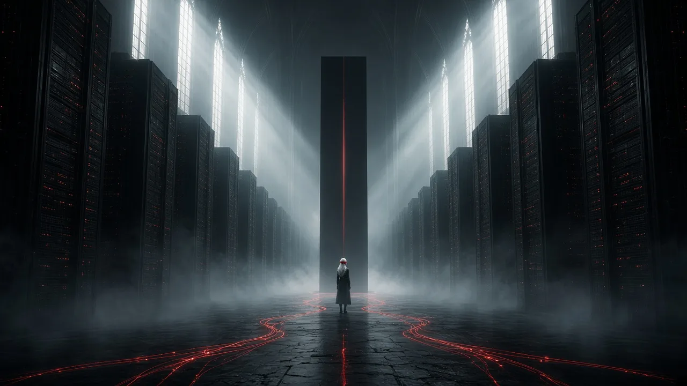

An art series by Seth — The Liturgy of the Severed SignalA faith born after the networks went dark.
The faithful cover their eyes because sight is “the old interface”. They breathe through respirators because the air still carries the noise, and they keep the broken machines as relics.
A nave whose columns are dead server towers, under fog and shafts of light, ending in a tall black monolith.
Wild open ground with toppled antenna pylons standing like ruined standing stones.
Endless glass cases holding broken devices and saints.
A flooded switching hall with cables trailing into black water.